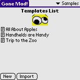

Read and write interesting short stories with Gone Mad! Start by selecting a template, which contains some blanks for you to fill in. Enter words that fit the descriptions. The more creative you are, the crazier the final story will turn out. After completing all of the blanks, the final story will be displayed, containing the words you filled in. If you like your version of story, you can export it to Memo Pad.
Installation of Gone Mad! is like installing any other Palm OS program:
When the synchronization is done you will have a 'Gone Mad!' icon in the Unfiled category on your Palm PDA. Feel free to move Gone Mad! to another category.
When starting Gone Mad! for the first time three default stories will be loaded. Tap a story to name to enter keywords.
The keywords needs to be entered to create the final story. When all keywords have been entered, tap View to view the final story. To clear the keywords list select the Clear Keywords entry in the menu. To clear an individual keyword tap the little scissor icon next to the keyword field.
If you want to change one or more of the keywords tap Back. To skip the story altogether tap Templates. When satisfied with the final story tap Export to export the final story to Memo Pad. If you want to change a word or two tap the lock icon to unlock the story - now you can edit the story.
On the main screen you can tap the little page icon to edit the story template. You can beam the story template to another Gone Mad! user by selecting the Beam entry in the menu. You can export the template to Memo Pad by selecting the Export entry in the menu.
You can import Story Templates from Memo Pad by selecting the Import entry in the menu. This will enable you to import a whole category as templates.
You can import one Story Template from Memo Pad by tapping the Import button. This will bring up the Memo Browser. Tap the memo entry to import.
You can export Story Templates to Memo Pad by selecting the Export entry in the menu. This will enable you to export a whole category as templates.
The easiest way to create story templates is to create them as memos in the Memo program in Palm Desktop. HotSync and import the template. Alternatively, you can create a new story template by tapping the New button on the main form.
To add a keyword enter a keyword description in square brackets. F.ex:
Gone Mad! is truly [adjective]!
If you create a new story template, enter the above text and then select the story name from the Templates list on the main screen you will go to the keywords screen where you have to input one word/phrase, adjective. If you f.ex. enter awesome as a response to the adjective request and tap View the following story will be created:
Gone Mad! is truly awesome!
For a more thorough explanation and for examples please visit Tony Vincents Gone Mad! Page.
Currently Gone Mad! supports the following System Keywords:
| Keyword | Description | |
|---|---|---|
| *name | Expands to the handheld user name. | |
| *date | Expands to the current date. | |
| *time | Expands to the current time. |
System keywords must be entered in square brackets - [*name], [*date], [*time].
Keywords are case insensitive. That is, [adjective], [ADJECTIVE] and [AdJeCtIvE] all refers to the same keyword.